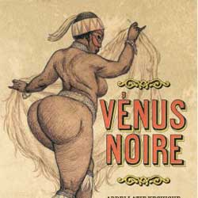

|
| Home|Talent|Cosmetic|Deformity|Abnormal|Ethnological |
Hottetot Venu: The African QueenThe life story of Saartjie Baartman, the African slave who was displayed in Europe in the early 19th century, contains so many layers of oppression to sort through that author Rachel Holmes begins by trying to untangle her name. In “African Queen: the Real Life of the Hottentot Venus,” Holmes concedes that Saartjie (pronounced “Saar-key,” meaning “little Sara”) might not even be the name she was born with, calling the -tjie diminutive suffix a “racist speech act.” Colonialist roots and all, it “was her name in life as she lived it.” Baartman was born into the Eastern Cape Khoisan, the indigenous herding tribe that once populated part of South Africa. As a teenager, she was orphaned after her father and fianci were both murdered in a colonial war, and sold to a trader, Pieter Willem Cesars. He took her to Cape Town, where she worked for his brother as a nursemaid. Around 1810, once the family started experiencing economic difficulties, they looked to Baartman as their next source of income, figuring that in Europe, where curiosity about the Dark Continent ran rampant, “a pretty maidservant with notable buttocks and a spotty giraffe skin were a winning combination on which to stake their future.” They settled in late Georgian London, where freak shows touting “the ne plus ultra of hideousness” or “the greatest deformity in the world” lined Piccadilly. As Holmes points out, England was transitioning from a sentimental primitivism — the noble savage — to the popular Victorian notion of ethnology. With the slave trade being abolished just a few years before and the black population of London at about 20,000, their challenge was to make the investment — Baartman — conform to stereotypes and yet also seem like a novelty. They marketed her as a kind of “scantily clad totem goddess,” the Hottentot Venus, sex incarnate. Hottentots, what European traders called the native Khoisan for the clicking sound of their language, “signified all that was strange, disturbing, alien, and possibly, sexually deviant.” |